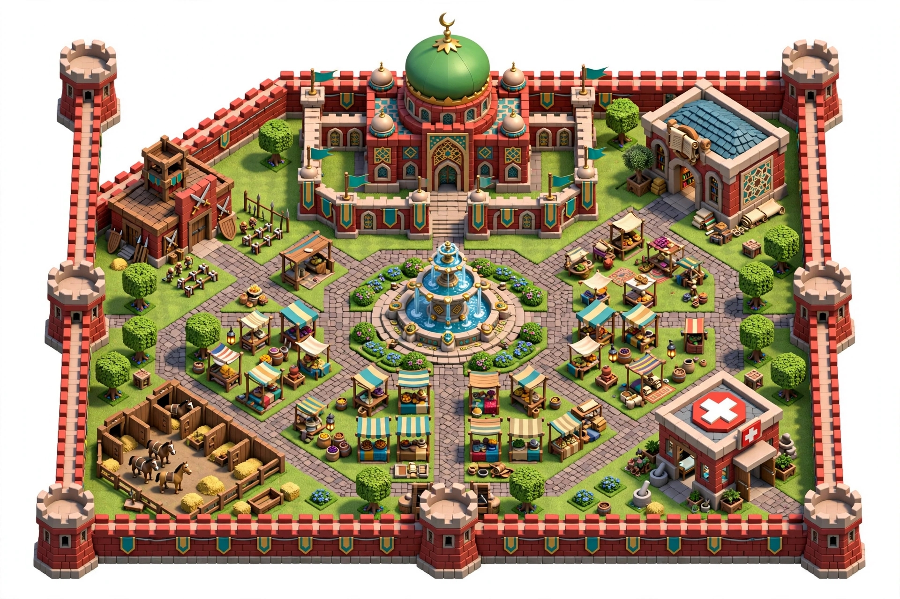
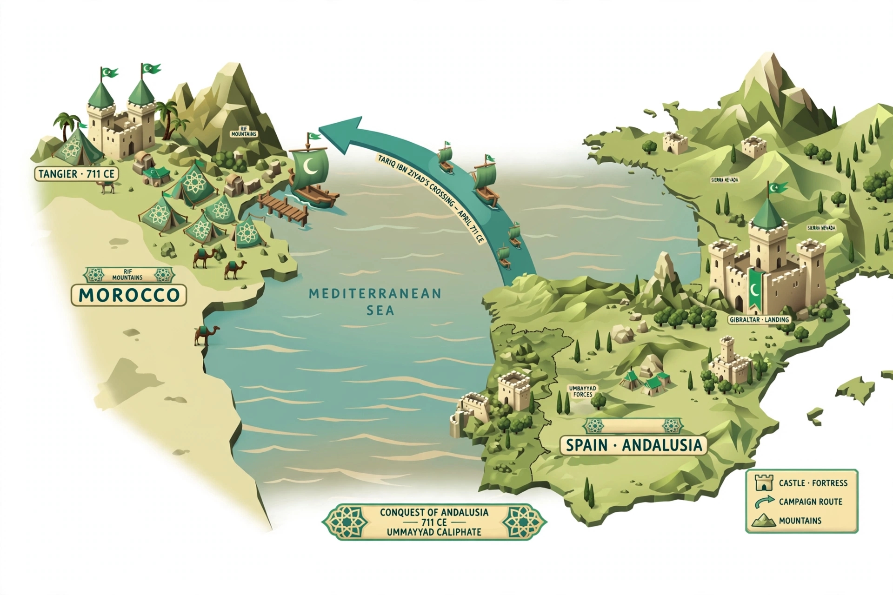

🏰 قلعة طارق - الخارج

برك للدخول للمدينة
برك للدخول للمدينة


📜 رحلة طارق بن زياد:
من طنجة (المغرب) → عبر البحر المتوسط → إلى جبل طارق (إسبانيا)
🏰 طنجة 711م: معسكر المسلمين
⛵ البحر: 7 سفن براية التوحيد
🏰 جبل طارق: أول قلعة إسلامية في الأندلس
⚔️ الهدف: فتح الأندلس للإسلام